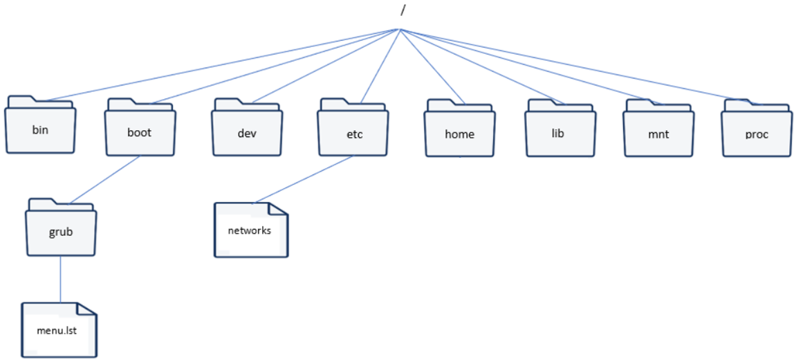
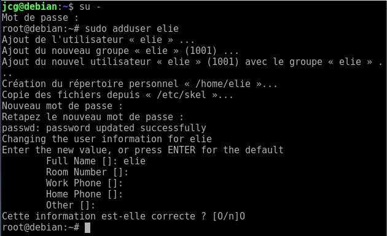

Les systèmes d'exploitations sont les systèmes qui qui constituent le fonctionement d'une machine informatique (ordi, phone, e-montre)
Les ordinateurs marchent sous trois système connus : Windows, MacOS, et Linux.
Linux est le système d'exploitation "premier",plus souvent utilisé par les programateurs.
•Le shell
C'est le terminal (console) du système d'exploitation Linux. A l'aide de commandes, l'utilisateur peut interagir avec le système.
L'arborescence du système linux se présente comme :

•Les commandes
Naviguer
cd : se déplacer.
ls : lister répertoires et fichiers.
pwd : afficher l'emplacement répertoire.
Moduler les fichiers
cp : copier.
mkdir : créer un dossier.
mv : renommer ou déplacer.
ln : liens.
rm : supprimer.
rmdir : supprimer dossier vide.
touch : créer un fichier.
Moduler les fichiers
find : recherche.
locate : localiser fichier.
which : Chemin d'une commande.
Les droits
chmod : gérer les droits d'un fichier.
chown : gérer la propriété.
umask : création automatique des droits.
Access Control List : Gestion des droits avancés.
Autre
cat : lire le contenu.
checksum: Vérifier l'intégrité.
•Ajouter un utilisateur

Fin du cours sur le Système d'exploitation. Cliquez ici pour retourner en haut de la page.